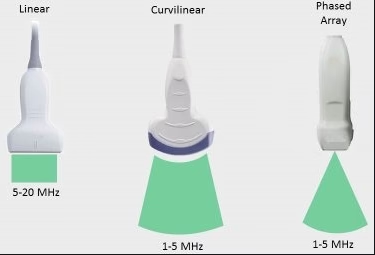
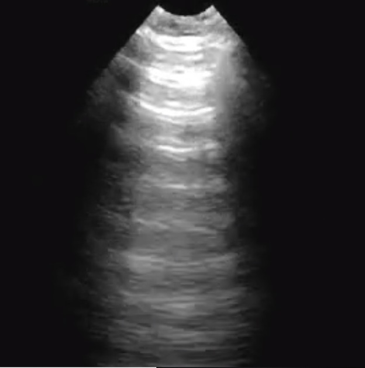
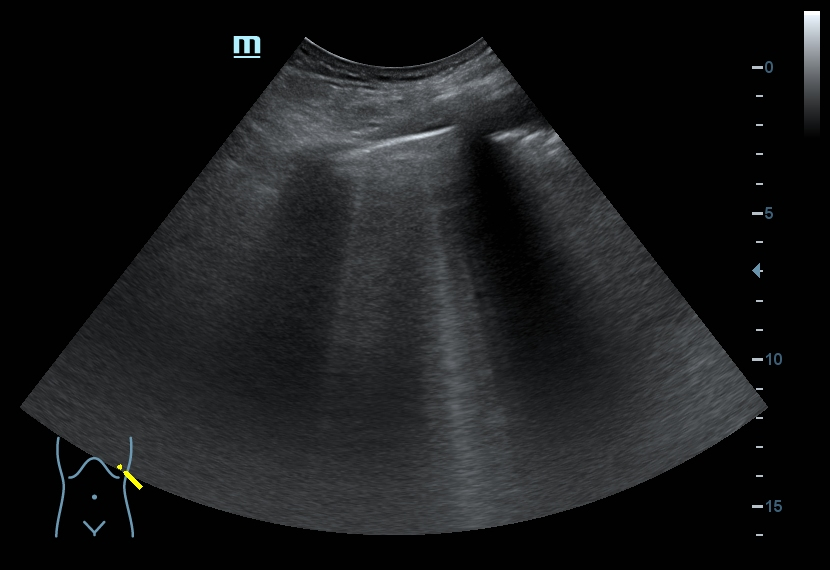

Piezoelectric crystals within the transducer convert electrical energy into mechanical vibrations (sound), and returning echoes reverse the process to generate image data. Clinical POCUS uses 1–15 MHz. Sound propagates at 1,540 m/s through soft tissue — the machine assumes this constant for all depth calculations.
| Tissue | Appearance | Clinical Examples |
|---|---|---|
| Air / Gas | Hyperechoic with posterior shadowing or reverberation | Pneumothorax, bowel gas, lung artifact |
| Bone / Calcification | Bright surface, clean posterior acoustic shadow | Ribs, gallstones, kidney stones |
| Fluid | Anechoic (black), posterior acoustic enhancement | Blood, urine, bile, pleural effusion, ascites |
| Soft tissue | Variable echogenicity; liver = mid-gray reference | Liver, muscle, fat, parenchyma |
The liver is the standard echogenicity reference. Structures are hyperechoic (brighter), isoechoic (same), or hypoechoic (darker) relative to liver. Renal cortex is normally isoechoic to slightly less than liver. Spleen is slightly more echogenic than liver.
Use for: Vascular access (IJ, femoral, radial, brachial), UGPIV, soft tissue/abscess, nerve blocks, pleural sliding assessment, DVT compression, ocular POCUS
Use for: eFAST abdomen, AAA, biliary, renal, bladder, OB/pelvic, lung B-lines, subcostal cardiac/IVC, paracentesis, thoracentesis
Use for: All cardiac views, lung POCUS (intercostal), subcostal eFAST, IVC. Small footprint fits between ribs — essential for parasternal/apical windows.
| Application | First Choice | Alternative | Notes |
|---|---|---|---|
| Cardiac (parasternal, apical) | Phased array | — | Small footprint essential for intercostal windows |
| Cardiac (subcostal) + IVC | Phased array | Curvilinear | Both adequate; phased array preferred |
| Lung sliding / pleura | Linear | Curvilinear, phased array | Linear best resolution at pleural line |
| Lung B-lines | Curvilinear or phased array | Linear (less useful) | B-lines visible on all probes; curvilinear preferred |
| Pleural effusion / thoracentesis | Curvilinear | Phased array | Need depth and wide field for diaphragm visualization |
| eFAST abdomen | Curvilinear | Phased array | Curvilinear: wider FOV, better RUQ/LUQ |
| AAA | Curvilinear | — | Linear insufficient depth; phased array loses lateral resolution |
| Central venous access | Linear | — | Resolution critical for vessel identification |
| DVT compression | Linear | Curvilinear (deep thigh) | High freq for vein compressibility assessment |
| OB (transabdominal) | Curvilinear | — | Low frequency for pelvic depth |
| OB (transvaginal / early) | Endocavitary | — | Far superior resolution for early pregnancy |
| Ocular POCUS | Linear (7.5–10 MHz) | — | Use gel pad; never apply direct globe pressure |

Smaller body habitus favors higher-frequency, shorter-working-distance probes. A high-frequency linear or hockey-stick probe often substitutes for curvilinear applications (abdominal, renal, hip) in infants and young children, where adult curvilinear depth is unnecessary and resolution is more valuable than penetration. Reserve low-frequency curvilinear/phased array for older children and larger body habitus.
Standard 2D grayscale image. Default for all POCUS. Pixel brightness = echo amplitude. Frame rate 20–30 fps. Increasing depth reduces frame rate — minimize depth to target.
Records motion along a single scanline over time. Key uses: seashore sign (lung sliding), stratosphere sign (PTX), IVC diameter, EPSS (EF surrogate), diaphragm excursion. High temporal resolution.
Superimposes directional flow onto B-mode. BART: Blue Away, Red Toward. Uses: valve regurgitation, vessel ID vs. tendon, DVT, fetal HR, carotid screening.
Velocity at specific depth (sample volume). VTI calculations, diastolic function, mitral inflow. Limited by Nyquist limit — aliasing above ~1.5–2 m/s.
No sample volume; measures highest velocity along entire beam. No aliasing. Tricuspid regurgitant jet (RVSP), aortic stenosis peak gradient.
Myocardial tissue velocity (not blood flow). Mitral annular e', S'. Diastolic dysfunction grading. Low filter, high gain.
All Doppler measurements are angle-dependent. Accuracy is maximal when beam is parallel to flow (0°). Error increases substantially above 20° off-axis. For VTI, apical windows optimize alignment.
Artifacts arise from violations of the machine’s assumptions that sound travels in a straight line at 1,540 m/s. Critically, some artifacts are diagnostically essential — the B-line and A-line are artifacts, not anatomic structures.
| Artifact | Mechanism | Appearance | Clinical Significance |
|---|---|---|---|
| A-Lines | Reverberation between pleura and transducer | Horizontal hyperechoic lines at equal intervals below pleural line | Normal aerated lung OR pneumothorax. Must assess lung sliding to differentiate. |
| B-Lines (comet-tail) | Reverberation from thickened sub-pleural interlobular septa | Vertical hyperechoic laser-like lines from pleura to screen bottom, erasing A-lines, moving with lung | ≥3 per zone = interstitial syndrome. Distinguish from Z-lines (short, don’t erase A-lines). |
| Posterior Acoustic Shadow | Near-complete reflection/absorption by dense structure | Dark shadow deep to bright structure | Bone, gallstones, kidney stones, calcifications |
| Posterior Enhancement | Fluid attenuates less — deeper structures appear brighter | Bright region deep to fluid-filled structure | Confirms fluid-filled structure: gallbladder, cyst, effusion |
| Mirror Image | Specular reflector (diaphragm) bounces beam — machine duplicates structure | Liver “reflected” above diaphragm into chest | Can mimic hepatic or subphrenic pathology. Symmetric duplication across diaphragm. |
| Reverberation / Ring-Down | Beam bouncing between two interfaces repeatedly | Equally spaced echoes at multiples of interface depth | Air interfaces, needle tip identification |
| Anisotropy | Angle-dependent structures (tendons, nerves) appear hypoechoic off-perpendicular | Tendon/nerve dark at off-angle | Heel-toe probe to maintain perpendicular. Critical for nerve block guidance. |
| Aliasing (Doppler) | PW sampling rate too low for velocity measured | Color reversal at peak velocity; PW waveform clipped and flipped | Increase PRF or scale; switch to CW Doppler for high-velocity jets |


Target structure should occupy center to lower third of screen. Excessive depth dilutes detail and reduces frame rate. Minimize to what you need.
Overall signal amplification. Fluid should appear anechoic (true black). Too high = washed out. Too low = underresolved. TGC sliders allow depth-specific adjustment.
Concentrates beam at a specific depth. Set at or just below target structure. Multiple focal zones improve resolution but reduce frame rate.
Many machines allow in-probe frequency adjustment. Raise for near-field; lower for deeper targets. Auto-selected by preset in most machines.
HD zoom (reacquires at higher density) preferred over digital zoom (magnifies pixels without improving resolution).
Pulse repetition frequency determines max velocity measurable (Nyquist = PRF/2). Increase to resolve aliasing. Keep color box small for best frame rate.
Before every scan: (1) Select probe. (2) Select preset. (3) Set depth — target in lower half. (4) Adjust gain — fluid black. (5) Move focus to target. (6) Add Doppler as needed.